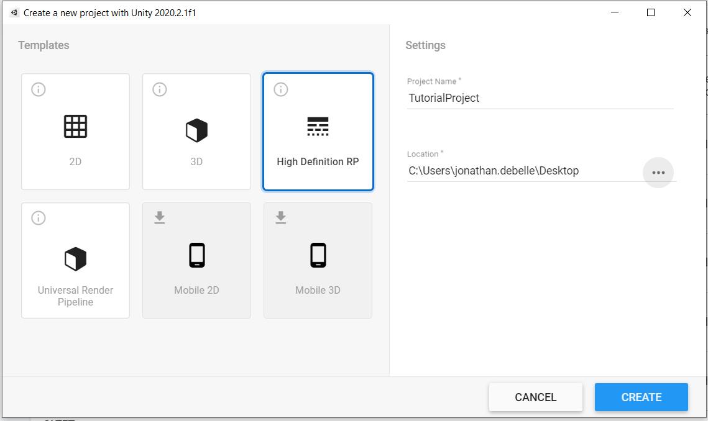
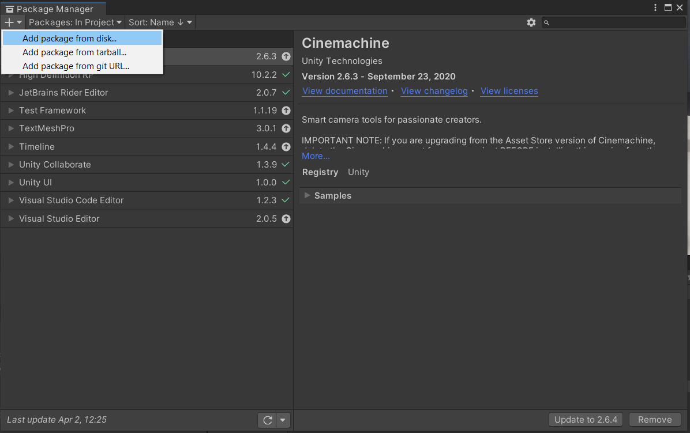
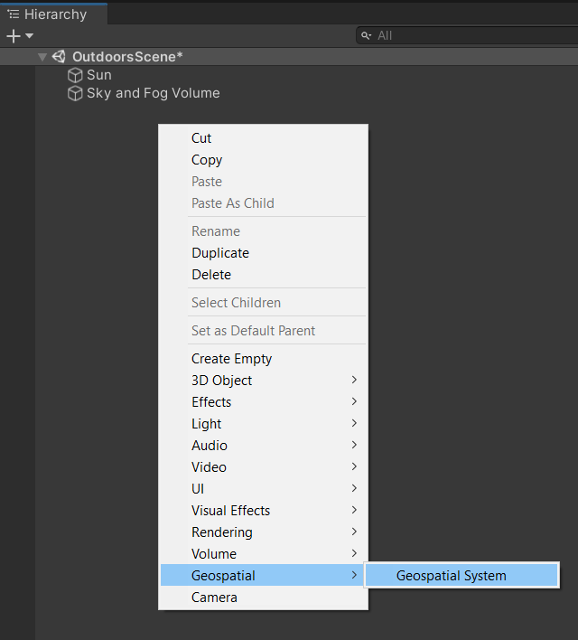
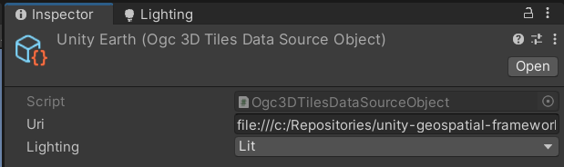
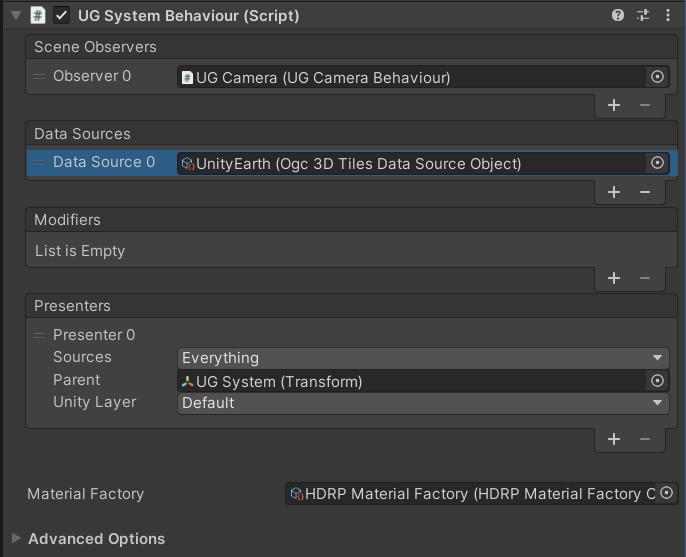
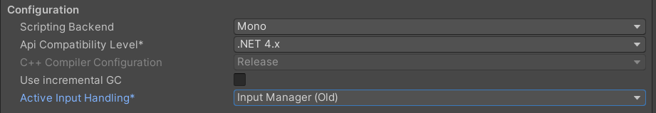
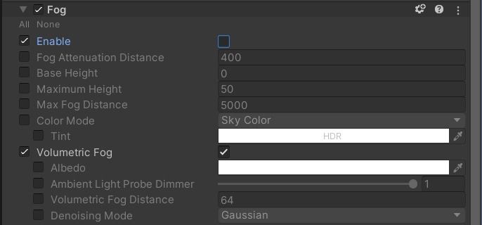
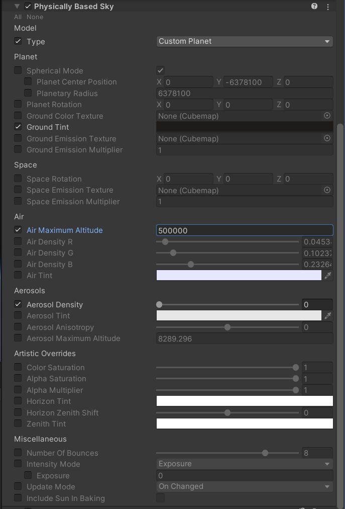
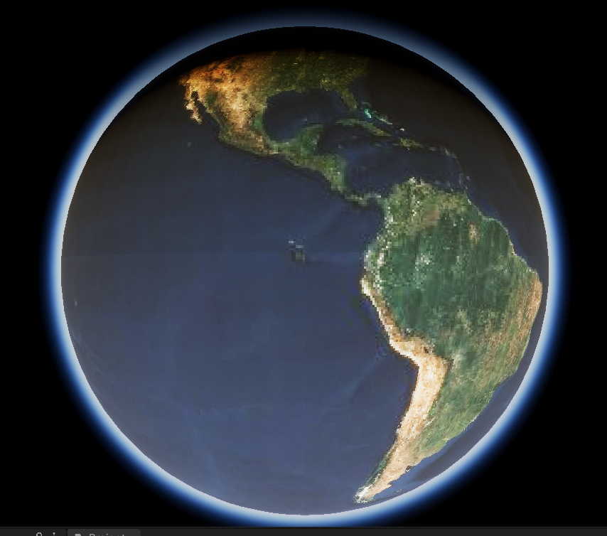

First Time Setup
Open or Create a Compatible Project
The Unity Geospatial Framework currently supports the built-in render pipeline, the Universal Render Pipeline as well as the High Definitions Render Pipeline for Unity versions 2020.2. and above.
Although you can use any of the aforementioned render pipelines and any project you would like, this tutorial will guide you through the process of getting up and running with HDRP inside of a fresh Unity project.
To begin, create a new project using the HDRP template.

Import the Package
In order to import the package, we will use Unity's Package Manager. Open
it by clicking Window -> Package Manager
Once the package manager has appeared, click on the + icon at the top
left of the screen and select Add package from git URL.... Add all three
following packages, in the following order. The gis.streaming-framework package
must be added last as it has dependencies on the two other packages.
git@github.com:Unity-Technologies/glTFast.gitgit@github.com:Unity-Technologies/com.unity.gis.high-precision-framework.gitgit@github.com:Unity-Technologies/com.unity.gis.streaming-framework.git

Basic Scene Setup
- Create a new scene by clicking
File -> New Sceneand select theBasic Outdoor (HDRP)scene template. - Delete the
Main Camera. - In the Scene Hierarchy's context menu, select
Geospatial -> Geospatial System.
This will create a new GameObject in the scene with a UG System
component and a few child objects.

Creating a Data Layer
By default, the UGSystem doesn't display anything. We need to create and provide a geospatial data source. We're going to begin by creating a data source that will point the UGSystem towards the Unity Earth dataset.
- Download the UnityEarth-610m-v3.0 and decompress the archive anywhere on your machine.
- In your asset's right-click context menu select
Create -> Geospatial -> Data Sources -> TMS Terrain. - Name this newly created asset
UnityEarth. - Select the asset and, in the inspector, set the URI field of the asset to
file:///c:/path-to-earth-asset/terrain-hdrp.json - Since this data source is unlit by default, which won't take advantage of the HDRP, let's also force the
data source's materials to be lit by changing the
Lightingsetting fromDefaulttoLit.

Configure the UGSystem
Select the UGSystem and, in the inspector, apply the following configurations:
- Leave the Scene Observers untouched. By default, it will point towards the camera object contained within the system.
- Add the
UnityEarthasset you created in the previous step to the data sources. - Leave the modifiers untouched.
- Leave the Presenters untouched. By default, there will be a single presenter which will instantiate all of your data sources on the default render layer.
- Set the material factory field to the
HDRP Material Factory. - Leave the advanced options untouched.

Adjust Settings IMPORTANT!
The default settings in a new HDRP project are not ideal to get started with the geospatial framework. We recommend making the following simple changes just to get started. Keep in mind these settings are just a functional starting point. Different applications may/will required significantly different settings from the ones shown below.
Input System
Under Edit -> Project Settings -> Player -> Other Settings -> Active Input Handling
make sure the value is either set to Input Manager (Old) or to Both. This
is only necessary for the example Fly Camera script to work. If you write your own
camera controller, feel free to use the input system of your choosing.

Fog
By default, the fog will completely occlude the planet on both URP and HDRP. To
disable it, select the Sky and Fog Volume in the Hierarchy window and,
in the inspector, enable the fog override and disable the fog.

Procedural Sky Settings
HDRP has default sky settings that are not optimal for low resolution terrain. We recommend using these settings to get started. Note that the values we are proposing are not realistic values. However, without these settings, you will experience a horrendous golf-ball effect when the camera is away from the surface of the planet. We are working on finding a better solution for the future.

Testing and Exploring
When you enter play mode, it will take a few seconds for the first geometry to load. Normally, if everything is working as expected, you should be seeing something similar to the following screenshot.
Now, feel free to explore the world, using the Fly Cam! It is very similar to Unity's scene camera controls:
wasd: Move and Strafee: Move Upq: Move DownRight Mouse Button: Pan / TiltShift: Fast MoveScroll: Increase/Decrease movement speed
